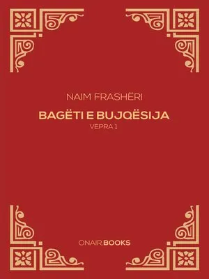

Bagëti e Bujqësia (1886)
"Bagëti e Bujqësia" mbetet një perlë e letërsisë shqiptare, duke mishëruar dashurinë për natyrën, tokën dhe kulturën vendase, si dhe duke shërbyer si një simbol i lidhjes së ngushtë mes njeriut dhe atdheut të tij.

"Histori e Skënderbeut" (1898)
Në këtë vepër, Naimi i jep një dimension madhështor figurës së Skënderbeut, duke e përshkruar atë si një luftëtar të pamposhtur për lirinë e Shqipërisë dhe si një simbol të bashkimit kombëtar.

Lulet e Verës (1890)
Kjo vepër mbetet një pasuri e letërsisë shqiptare, duke përçuar mesazhe të fuqishme për atdhedashurinë, besimin te e ardhmja dhe rëndësinë e harmonisë njerëzore.